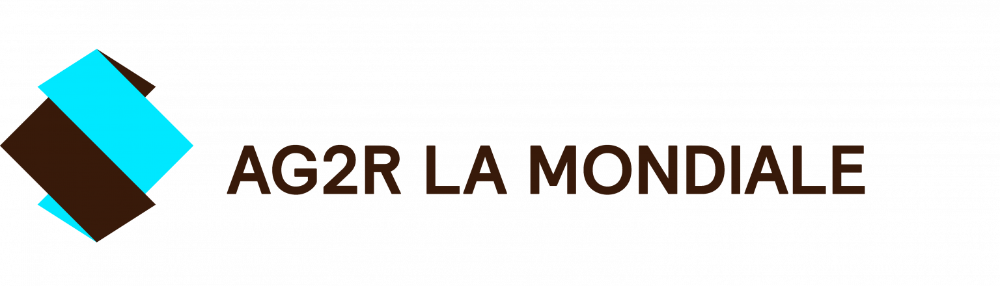

Open to full-time roles & advisory projects
À l'écoute d'opportunités — CDI & missions
I bring clarity and simplicity to demanding environments.
Je rends lisibles et intuitifs les environnements les plus complexes.
Senior product designer specialized in information architecture, systemic design, and accessibility. I choose projects that create genuine, positive impact — currently designing a clinical tool for MSF's fight against antimicrobial resistance.
Senior product designer spécialisé en architecture de l'information, design systémique et accessibilité. Je choisis des projets à impact concret — actuellement en mission chez MSF sur un outil médical dédié à la lutte contre l'antibiorésistance.
Design Approach & Principles
Approche & principes
I design simple, reliable digital products built for real-world use and tested against complex constraints.
Je conçois des produits numériques simples et fiables, pensés pour des usages réels et éprouvés face à des environnements complexes.
01
Inclusive
Inclusif
Inclusivity starts with solid interface foundations: deliberate contrast, legible type, and intuitive layouts designed for broad usability.
L'inclusivité commence par les fondamentaux d'interface : contrastes soignés, typographies lisibles et navigation évidente pour tous les profils d'utilisateurs.
02
Systemic
Systémique
I build resilient architectures and modular design systems, mindful of their technical footprint and broader social or environmental impact.
Je conçois des architectures pérennes et des design systems modulaires, attentifs à leur empreinte technique et à leur impact social ou environnemental au sein de l'organisation.
03
End-to-end continuity
De bout en bout
I bridge research, strategy, and engineering, working hand-in-hand with developers and domain experts through to final production.
J'assure le lien continu entre recherche, stratégie et intégration, en travaillant main dans la main avec les développeur·euse·s et les expert·e·s métier jusqu'à la mise en production.
04
Collective
Collective
Design is never done in silos: I mentor and align design teams, while actively engaging user communities throughout co-design.
Le design n'est jamais un acte isolé : j'anime et synchronise les équipes de design, tout en impliquant activement les communautés d'utilisateurs dans la co-conception.
Featured Projects
Projets phares
Two case studies showcasing my approach to complex, highly constrained environments.
Deux études de cas illustrant ma démarche face à des environnements complexes et exigeants.

2019 — 2022Origami — Scaling the Design System
Origami — Industrialisation du design system
Professional Experience
Parcours professionnel
Over a decade of design experience leading user research, information architecture, and UI tooling.
Plus de dix ans d'expérience en design, pilotant la recherche utilisateur, l'architecture de l'information et l'outillage UI.
Freelance Lead Product Designer (Antibiogo)
Lead Product Designer Freelance (Antibiogo)
MSF / AntibiogoI lead ongoing product design for the Antibiogo medical device app, conducting continuous user research, designing new features, and shaping the UX deployment strategy (localization, lab training).
J'accompagne l'évolution de l'application Antibiogo (dispositif médical) : recherche utilisateur continue, conception de nouvelles fonctionnalités et stratégie UX pour le déploiement sur le terrain (localisation, formation des laboratoires).
Lead Product Designer (Antibiogo)
Lead Product Designer (Antibiogo)
MSF FoundationI led the design for the Antibiogo Android medical app under IVDD/IVDR regulatory certifications. I designed the core user journeys, conducted laboratory field research, built the design system in close sync with engineering, and contributed to usability validation studies with an external partner.
J'ai piloté le design de l'application Android Antibiogo sous certification médicale IVDD/IVDR. J'ai conçu les parcours clés de l'application, mené la recherche terrain en laboratoire, structuré le design system en lien étroit avec l'équipe tech et contribué aux études d'usabilité avec un cabinet spécialisé.
Senior Product Designer
Senior Product Designer
AatlantideI conducted UX/UI audits on core dental and medical SaaS workflows (billing, patient history) to identify usability friction points. Alongside this, I initiated the foundations of a design system and helped establish UI best practices across the team.
J’ai réalisé des audits UX/UI sur les parcours clés des plateformes SaaS praticiens (facturation, historique patient) pour identifier les points de friction. En parallèle, j’ai amorcé les fondations d’un design system et cadré les premières bonnes pratiques de conception d’interface pour l’équipe.
Product Designer (UX/UI)
Product Designer (UX/UI)
AG2R LA MONDIALEI designed customer web portals serving 15 million policyholders. I restructured cross-service information architecture to unify fragmented portals into a seamless experience across desktop and mobile, led co-design workshops, and spearheaded the launch and rollout of the "Origami" design system.
J'ai conçu les espaces clients web du groupe au service de 15 millions d'assuré·es. J'ai unifié l'architecture de l'information pour lier plusieurs services cloisonnés en une navigation fluide (desktop et mobile), animé les ateliers de co-conception et piloté le lancement du design system « Origami ».
Academic Projects
Projets Académiques
Gobelins, l'école de l'imageI authored a research thesis: "The role and ethics of designers in accessibility and inclusion." I conceptualized and designed, in a team, "Dans les pas de Picasso," a responsive interactive exhibition for the Musée Picasso-Paris (student project).
J'ai rédigé un mémoire de recherche : « Le rôle et l'éthique des designers dans l'accessibilité et l'inclusion ». J'ai conceptualisé et conçu, en équipe, « Dans les pas de Picasso », une installation d'exposition interactive réactive pour le Musée Picasso-Paris (projet étudiant).
Older Professional Path
Parcours professionnel antérieur
Communication, Web Design & Front-EndA decade of earlier experience spanning graphic design, art direction, and front-end development, prior to specializing in product design. Dix ans d'expérience préalable entre design graphique, direction artistique et intégration web, avant ma spécialisation en product design.
Communications Officer + Web Designer
Chargé de communication + Web designer
Crédit Agricole Sud Rhône AlpesCommunications Officer
Chargé de Communication
CR&ON ArchitectesContent & Community Manager
Content & Community Manager
Freeride World TourEditorial Writer
Rédacteur
Nivéales média (Snowsurf & Ski Magazine)Get in Touch
Contact
I am open to senior product design roles, consulting on complex product challenges, and teaching opportunities. Naturally curious and versatile, I thrive on tackling demanding problems: let's connect.
Je suis disponible pour des rôles de Product Designer senior, du conseil sur des problématiques produit complexes ou des interventions pédagogiques. Curieux et polyvalent, j'aime m'emparer de sujets exigeants : discutons de vos projets.
francois.ohl@gmail.comAntibiogo — Android Mobile Medical Device
Antibiogo — Dispositif médical mobile sous Android
The Challenge
Le Défi
For over 3 years, I led the user experience and product design of Antibiogo, an offline Android medical device certified under IVDD (with IVDR certification in progress), developed by the MSF Foundation to combat antimicrobial resistance. The primary challenge was bridging international clinical microbiology standards (EUCAST and CLSI guidelines) with the frontline realities of resource-limited laboratories: diverse training and ingrained bad practices to address constructively, full standalone autonomy without any remote server, and zero-tolerance clinical safety requirements.
Pendant plus de 3 ans, j'ai piloté l'expérience utilisateur et la conception produit d'Antibiogo, une application médicale Android certifiée IVDD (et en cours de certification IVDR), développée par La Fondation MSF pour lutter contre l'antibiorésistance. Le défi central : concilier l'état de l'art de la microbiologie clinique (normes internationales EUCAST et CLSI) avec les réalités de terrain dans les laboratoires de pays à ressources limitées : niveaux de compétence hétérogènes et mauvaises pratiques courantes à corriger avec pédagogie, fonctionnement 100 % autonome sans serveur distant et sécurité clinique absolue.
In simpler terms: a free smartphone app helping laboratory technicians in low-resource settings determine which antibiotics are effective against bacterial infections.
En termes simples : une application mobile gratuite qui aide les technicien·nes de laboratoire dans les pays à ressources limitées à identifier les antibiotiques efficaces contre les infections bactériennes.
Safety-Critical Balance
Équilibre de sécurité vitale
Ensuring compliance with strict medical device regulations (IVDD/IVDR) and clinical accuracy, while respecting the diverse frontline skills of local operators.
Garantir la conformité aux exigences strictes de certification médicale (IVDD/IVDR) et l'exactitude clinique, tout en respectant l'hétérogénéité des compétences sur le terrain.
Methodology & Action
Méthodologie & Actions
- Mixed-Method Research & Clinical Co-Design: Direct benchtop observations during field missions, paired with extensive ongoing remote engagements (regular surveys, in-depth interviews, and continuous workshops with the internal clinical team and external domain experts).
- Intentional Friction & Safety Gates: Unlike consumer products where all friction is eliminated, clinical UX introduces deliberate checkpoints on critical decisions to prevent automatic rubber-stamping, while streamlining interactions during repetitive routine tasks.
- Dual-Track Internal Architecture (IVDD & IVDR): Steered information architecture to iterate continuously on the deployed IVDD release while designing major structural updates for the upcoming IVDR certified version, ensuring updates to one track never disrupted the other.
- Design System Transition & Visual Refresh: Directed the comprehensive component overhaul alongside a dedicated UI designer: migration from Material 2 to Material 3, updated aesthetics with new typography, refreshed brand colors, and an expanded functional palette.
- Recherche utilisateur·rices & cadrage médical : Observations directes de paillasse lors de missions de terrain, complétées par une majorité d'échanges à distance (questionnaires quanti/quali, entretiens réguliers, et ateliers continus avec l'équipe clinique interne et des expert·es externes).
- Friction intentionnelle et garde-fous : Contrairement aux applications grand public où l'on élimine toute friction, la conception clinique impose des étapes de contrôle délibérées sur les décisions critiques pour empêcher les validations automatiques aveugles, tout en allégeant les interactions sur les routines répétitives.
- Dualité de versionnage en interne (IVDD & IVDR) : Pilotage de l'architecture pour faire évoluer en continu l'application IVDD actuellement déployée auprès des utilisateur·rices, tout en intégrant des refontes majeures pour la future version IVDR (en cours de certification), en veillant à ce que les évolutions de l'une ne déstabilisent pas l'autre.
- Transition de Design System & nouvelle esthétique : Direction de la refonte globale du système de composants aux côtés d'une UI designer : migration de Material 2 vers Material 3, évolution de l'esthétique avec une nouvelle typographie, de nouvelles couleurs principales et un élargissement de la palette fonctionnelle.
The Outcome
Le Résultat
Missions & Impact
Missions & Impact
A robust, certified medical tool deployed daily across demanding laboratory environments worldwide, empowering practitioners to obtain reliable diagnostics independently of any remote server.
Un outil médical robuste et certifié, utilisé au quotidien dans des laboratoires aux contextes exigeants à travers le monde, qui permet aux praticien·nes d'obtenir des diagnostics fiables sans dépendre d'un serveur distant.
UX Decision Matrix: Risk & Friction
Matrice de décision UX : Risque & Friction
Handoff & Technical Alignment
Handoff & alignement technique


Technical Interaction Specs: Detailed handoff rules for Android engineering — keyboard focus management, layout stability, simultaneous state transitions, and native back-behavior handling.
Spécifications techniques d'interaction : Définition précise des règles de développement pour l'équipe Android — gestion dynamique du clavier virtuel, transitions simultanées d'interface, positionnement des notifications et respect des comportements natifs de l'OS.
2019 — 2022
02 — Design Ops & Tooling
02 — Outillage & culture design
Origami — Scaling the Design System
Origami — Industrialisation du design system
Step 01 / Lobbying
Étape 01 / Lobbying
Convincing Stakeholders
Convaincre les parties prenantes
Being the first to introduce a design system to the organization, I researched and compiled case studies demonstrating development cost savings (ROI) alongside the benefits of visual consistency. This lobbying was vital to secure initial funding and engineering resources.
Étant le premier à introduire un design system dans l'organisation, j'ai recherché et compilé des études de cas démontrant les économies de coûts de développement (ROI) ainsi que les avantages de la cohérence visuelle. Ce lobbying a été vital pour obtenir le financement initial et les ressources d'ingénierie.
Step 02 / Figma UI Kit
Étape 02 / Kit UI Figma
Component Architecture
Architecture des composants
Simultaneously, I initiated a Figma UI Kit that scaled over years, adapting to evolving brand guidelines. It grew into a library of over 50 responsive components with diverse interactive states, ensuring seamless design handoffs.
Simultanément, j'ai initié un kit UI Figma qui a évolué au fil des ans, s'adaptant aux directives de marque. Il s'est développé pour devenir une bibliothèque de plus de 50 composants réactifs avec divers états interactifs, garantissant des handoffs fluides.
Step 03 / Documentation
Étape 03 / Documentation
Single Source of Truth
Source unique de vérité
We established comprehensive documentation in Zeroheight. This optimized designer onboarding, unified brand standards, and reduced repetitive communication cycles with developer teams regarding element usage and micro-interactions.
Nous avons établi une documentation complète dans Zeroheight. Cela a optimisé l'onboarding des designers, unifié les standards de marque et réduit les cycles de communication répétitifs avec les équipes de développement concernant l'utilisation des éléments et les micro-interactions.
Step 04 / Implementation
Étape 04 / Intégration
Angular Library Rollout
Déploiement de la bibliothèque Angular
Co-led a Scrum setup with front-end engineers and tech leads to build the foundation of an Angular library in an 8-week sprint. Development is now decentralized across feature teams under design oversight.
Co-pilotage d'une organisation Scrum avec les ingénieurs front-end et les tech leads pour construire les bases d'une bibliothèque Angular dans un sprint de 8 semaines. Le développement est désormais décentralisé dans les équipes produit sous supervision du design.
Retrospective Analysis
Analyse rétrospective
Reflecting on the rollout of the Origami Design System over its lifecycle.
Retour sur le déploiement du Design System Origami tout au long de son cycle de vie.
What worked well
Ce qui a fonctionné
- Starting with small, highly-reusable core tokens.
- Progressively adding complex layouts as teams matured.
- Commencer avec de petits tokens de base hautement réutilisables.
- Ajouter progressivement des mises en page complexes à mesure que les équipes gagnaient en maturité.
Areas of improvement
Axes d'amélioration
- Exchanging guidelines with brand guardians much earlier.
- Creating a more open contribution model for other teams.
- Partager les directives avec les gardiens de la marque beaucoup plus tôt.
- Créer un modèle de contribution plus ouvert pour les autres équipes.